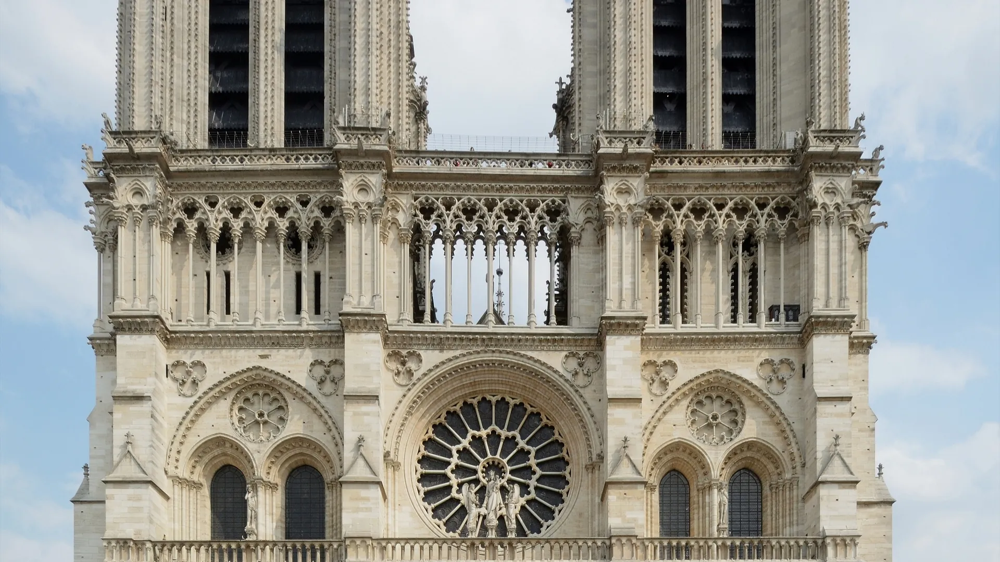

{kind=link}

BnF Richelieu
1868년 앙리 라브루스트가 주철 기둥과 9개 도자기 돔으로 완성한 19세기 건축의 걸작 '라브루스트 열람실'과 일반에 전면 무료 개방된 거대한 타원형 '오발 열람실(Salle Ovale)', 프랑스 국립도서관 박물관.

2019년 4월 화재 이후 5년간의 기적적인 복원을 거쳐 2024년 12월 재개관한 파리의 심장 시테 섬의 고딕 대성당. 1163년 초기 고딕의 정점, 복원된 96m 첨탑과 중세 스테인드글라스 3대 장미창.
센(Seine) 강 한가운데 시테(Île de la Cité) 섬에 우뚝 솟은 프랑스 고딕 건축의 최고 걸작이자 850년 파리 역사의 심장(유네스코 세계유산)이다.
1163년 모리스 드 쉴리 주교의 발원으로 착공되어 1345년 완공된 초기-전성기 고딕 성당으로, 1804년 나폴레옹 1세의 대관식과 빅토르 위고의 소설 『노트르담의 꼽추』의 배경이 되었다.
2019년 4월 15일 전 세계를 충격에 빠뜨렸던 대화재 이후, 프랑스 최고의 석공, 목수, 스테인드글라스 장인들이 5년간 전통 기법을 그대로 재현하여 96m 높이의 비올레르뒤크 첨탑(Flèche)과 지붕을 완벽하게 재건하고 2024년 12월 8일 전 세계에 다시 문을 열었다.
"화재의 비극을 딛고 기적처럼 부활한 순백의 석조 볼트와 800년 된 찬란한 장미창의 스테인드글라스 빛이 성당 안으로 쏟아지는 순간, 파리라는 도시의 불멸성을 가장 깊이 체감할 수 있다." 광장 앞 원점(Point Zéro) 표석을 밟고 성당 서쪽 파사드의 3개 포털 조각을 감상한 뒤, 성당 내부를 경건하게 순회하고 센 강변 요한 23세 광장에서 동쪽 플라잉 버트리스를 바라보는 60~75분 코스가 필수적이다.
| 운영시간 | 재확인 |
|---|---|
| 휴무 | 재확인 |
| 요금 | 입장 100% 무료 |
| 예약 | 공식 사이트(notredamedeparis.fr)에서만 · 제3자 플랫폼 판매 권한 없음 |
| 항목 | 상세 정보 |
|---|---|
| 위치 | 6 Parvis Notre-Dame - Pl. Jean-Paul II, 75004 Paris |
| 운영 시간 | 매일 07:45–19:00 (목요일 야간 22:00까지 연장 개방) |
| 입장료 | 대성당 본당 입장 무료 (보물관 및 탑 등정 별도 매표) |
| 예약 팁 | 재개관 이후 현장 대기열이 발생하므로 공식 모바일 앱(Notre-Dame de Paris)을 통한 무료 시간지정 사전 예약 슬롯 확보 권장 |
| 교통 접근 | 메트로 4호선 Cité역 도보 3분, RER B/C선 Saint-Michel Notre-Dame역 도보 4분 |
| 보행 주의 | 종교 시설이므로 모자 탈모 및 단정한 복장 필수 |
1868년 앙리 라브루스트가 주철 기둥과 9개 도자기 돔으로 완성한 19세기 건축의 걸작 '라브루스트 열람실'과 일반에 전면 무료 개방된 거대한 타원형 '오발 열람실(Salle Ovale)', 프랑스 국립도서관 박물관.

18세기 원형 곡물거래소를 세계적인 건축가 안도 다다오가 노출 콘크리트 원통 실린더로 리노베이션한 현대미술관. 프랑수아 피노 회장의 세계적 현대미술 컬렉션과 1889년 돔 천장 무역 파노라마 프레스코화.

렌조 피아노와 리처드 로저스가 건물 배관과 골격을 외벽으로 노출시킨 20세기 하이테크 건축의 전설이자 유럽 최대 근현대미술관. ⚠ 2025년 가을부터 2030년까지 전면 개보수 공사로 본관 폐관 중.

클로드 모네가 43년간 직접 꽃과 연못을 가꾸며 불후의 『수련』 대작을 창조해낸 살아있는 인상파 캔버스. 초록색 일본식 다리가 걸린 '물의 정원(Jardin d'eau)'과 핑크빛 모네 생가 아틀리에.

1900년 파리 만국박람회를 위해 건립된 45m 높이 아르누보 철골 유리 네이브(Nave)의 기념비적 국립 전시장. 2024 파리 올림픽을 거쳐 리노베이션 완료 후 재개관한 파리 문화 예술의 중심지.

중세 소르본 대학 교수와 학생들이 공용어로 라틴어를 쓰던 데서 유래한 800년 파리 지성의 요람이자 센 강 좌안(Rive Gauche)의 심장. 프랑스 위인들의 성소 팡테옹(Panthéon), 셰익스피어 앤 컴퍼니, 뤽상부르 공원.